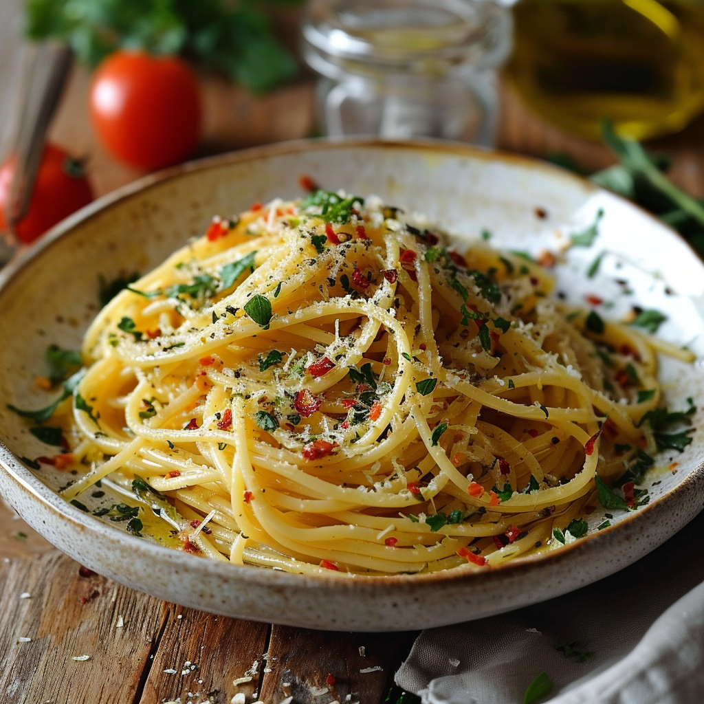

RECIPE
SPAGHETTI AGLIO E OLIO
20 MINS • EASY PREP • 2 SERVES

INSTRUCTIONS
COOK THE PASTA
- Fill a large pot with water, add salt, and bring to a boil.
- Add the spaghetti and cook according to the package instructions until al dente.
- Reserve 1/4 cup of the pasta cooking water before draining.
PREPARE THE GARLIC AND OIL
- While the pasta cooks, heat the olive oil in a large skillet over medium heat.
- Add the sliced garlic and sauté gently, stirring frequently, until it turns golden and fragrant (about 2-3 minutes). Be careful not to burn the garlic, as it can become bitter.
ADD RED PEPPER FLAKES
- Stir in the red pepper flakes and cook for 30 seconds to infuse the oil with a hint of spice.
COMBINE THE PASTA AND SAUCE
- Reduce the heat to low and add the drained spaghetti to the skillet. Toss to coat the pasta evenly with the garlic oil mixture.
- Gradually add the reserved pasta cooking water, a few tablespoons at a time, to create a light, silky sauce that clings to the pasta.
SEASON AND GARNISH
- Remove the skillet from heat. Sprinkle in the fresh parsley and toss again.
- If desired, garnish with grated Parmesan cheese and a sprinkle of lemon zest for added flavor.
SERVE
- Divide the pasta among serving plates and enjoy immediately.
INGREDIENTS
- 400g (14 oz) spaghetti
- 4 tbsp extra-virgin olive oil
- 6 garlic cloves, thinly sliced
- 1/2 tsp red pepper flakes (adjust to taste)
- Salt for pasta water (about 1 tbsp)
- 1/4 cup pasta cooking water (reserved)
- 1/4 cup fresh parsley, finely chopped
- 1/4 cup grated Parmesan cheese (optional)
- Lemon zest (optional, for added freshness)
EQUPIMENT NEEDED FOR PREPERATION
- Large pot for boiling pasta
- Colander
- Large skillet
- Tongs or a pasta fork
- Cutting board and sharp knife
- Measuring cups and spoons
NUTRITIONAL VALUE
Calories: 400
Protein: 10g
Total Fat: 16g
Carbohydrates: 63g
Cholesterol: 0mg
Sodium: 120mg (without cheese)
Note: Nutritional values are approximate and may vary based on specific ingredients and portion sizes.
Leave a Comment